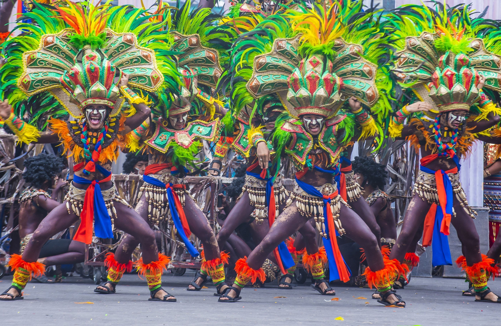
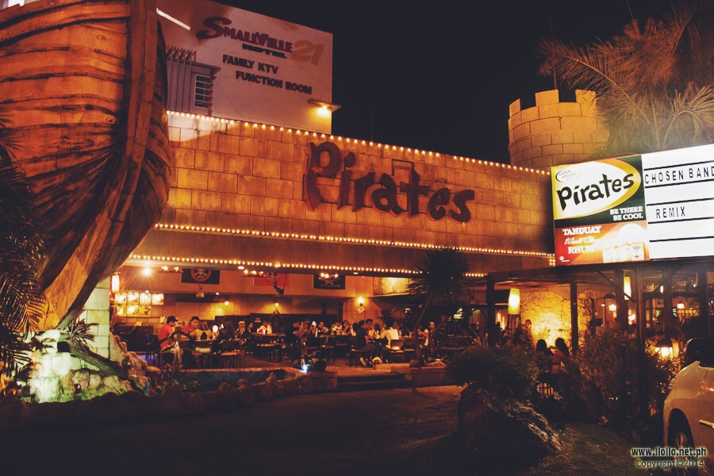

Iloilo Itinerary:
Ultimate Travel Guide
Travel to Iloilo City and explore its many historical, cultural landmarks, and natural wonders. Find the top attractions that you should add in your travel itinerary. When you look at the map, you’ll see that this beautiful province is located in the middle of the Philippines. Because of its location and rich cultural heritage, Iloilo is given the nickname The Heart Of The Philippines.
We live in a world that is full of beauty, charm and adventure. There is no end to the adventures we can have if only we seek them with our eyes open
Things to do in Iloilo, you’ll be sure your trip will be jampacked with great experiences. While you're here, make sure you don't miss these top spots within the city!


- Enjoy the Original La Paz Batchoy
- Tour Old Iloilo
- Take a Stroll Along the Iloilo River
- Party the Night Away
- Join the Dinagyang Festival
-

One of the biggest festivals in the Philippines, Dinagyang is a celebration of religion and culture of Ilonggos, as well as the colorful history and rich heritage of the province. Highlighted by spirited performances, outrageous costumes, and heart-pounding drumbeats, Dinagyang is a huge spectacle of color and entertainment.

- Bask in the Beauty of Islas de Gigantes

There are a ton of places to visit and things to do in Iloilo, but visiting Islas de Gigantes is up there on the list. Gigantes Islands is getting more recognition for being one of the most beautiful, underdeveloped beaches in the country. If you’re looking for white sand beaches, clear blue waters, majestic rock formations, mystic caves, a lagoon, and possibly everything the spells paradise, then Islas de Gigantes is a must visit for you!


Iloilo is a haven of great food, but one special dish stands out from all the rest -- the ultra Filipino La Paz Batchoy. The noodle soup with egg, beef loin, crispy pork cracklings (crushed chicharon), spring onions, and garlic originated from the La Paz district of the province and has since been a favorite among Filipinos. Locals and tourists can find an authentic bowl of this mouthwatering dish at La Paz Public Market, where Netong’s Original La Paz Batchoy is located.


Iloilo City continues to preserve its old city charm by restoring some of its oldest buildings from the Commonwealth era. Some even date back to the 1800s. Walking down Calle Real, also known as JM Basa Street, and along Plaza Libertad, you’ll get a sense of how Ilonggos lived back in the day -- clean and stress-free. The retro feel of the area recaptures the old glory of what is heritage district of the province.


Early mornings and late afternoons are best spent walking along the Iloilo River Esplanade. The open area is perfect for recreational activities such as jogging, biking, or just taking a stroll along the river to unwind. Most locals also spend their afternoons hanging out with friends and family members, sipping a cup of coffee in one of the cafes near the area while kids play in the open space. The serene waters and the sunrise or sunset complete the calming mood in this tourist spot.



Provinces aren’t usually synonymous with a good night out, dancing and drinking with friends. However, in Iloilo, the club scene is booming! Smallville Complex in Iloilo City is the hippest spot for a weekend out to have a good time over a couple of beers. The place has a string of dance clubs, bars, KTVs, and restaurants that cater to younger party animals as well as the older, more sophisticated crowd. If you’re looking to have a good time after touring Iloilo tourist spots, head over to Smallville!